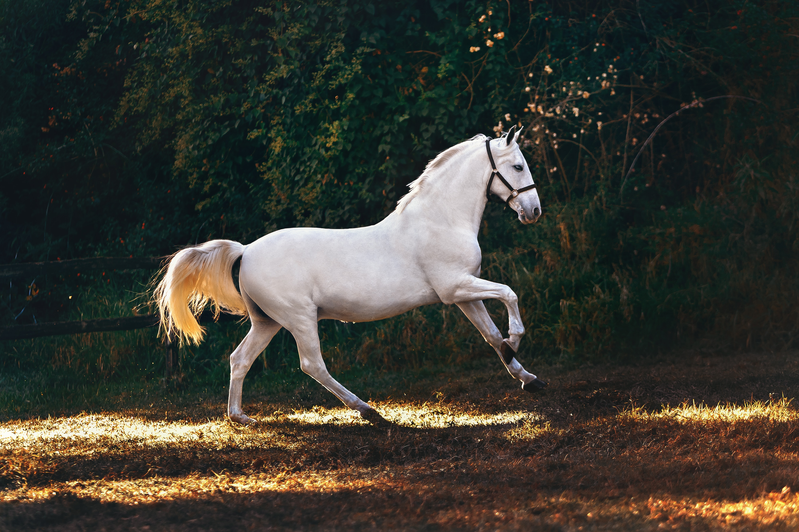
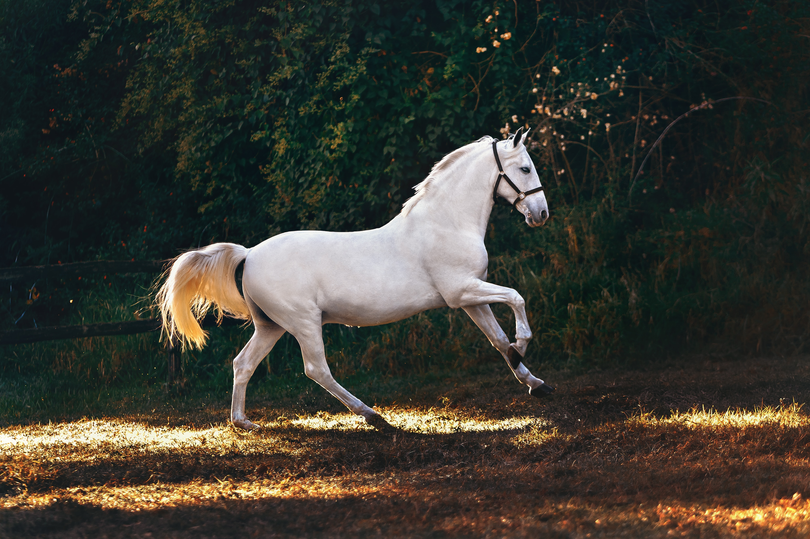
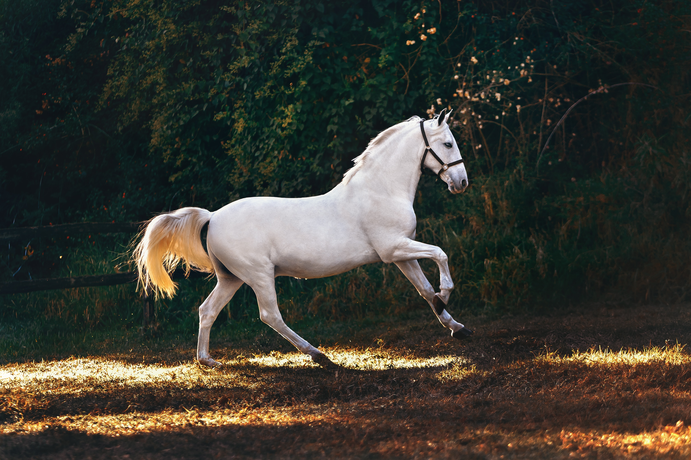

Some Favorite Images
 

My favorite movie is Notebook and it is a romantic movie.
The Notebook is an achingly tender story about the enduring power of
love, a story of miracles that will stay with you for ever
Movie Link
My favorite artist is The Prince. Prince was famed singer, songwriter, and musical innovator. Prince was born in 1985 in Minneapolis Minnesota.
Prince wikipedia

| Book Name | Author Name | URL About The Book |
|---|---|---|
| The Magic of Thinking Big | David J Schwartz | About the Book |
| How to Win Friends and Influence People | Dale Carnegei | About the Book |
| The Art of War | Sun Tzu | About the book |